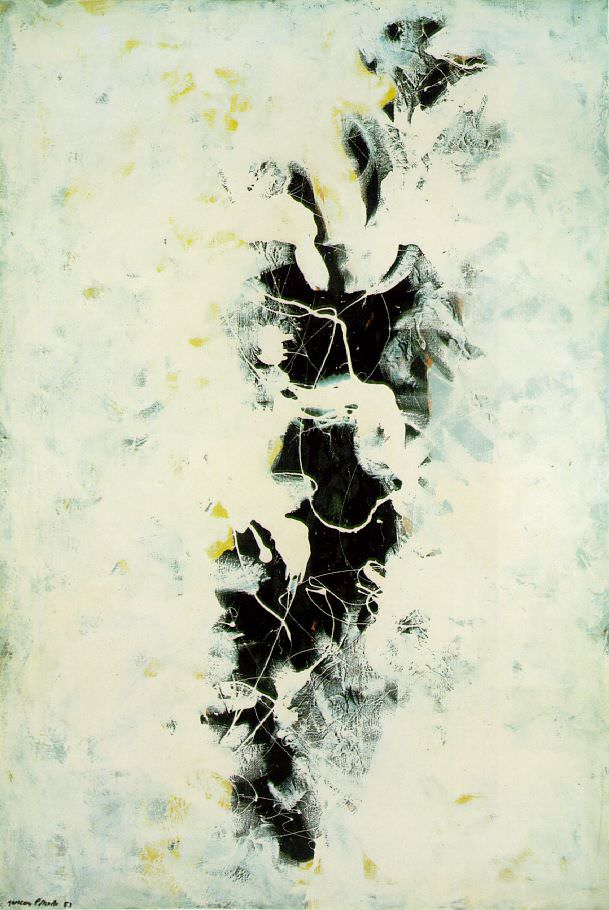

Saturday, August 17
Some horrible cosmic mistake has been made and all of a sudden I've been allowed to reach college age, with the damp grass under my skin, walking through campus at night. I swear I could have looked up and stepped onto the stars. I went down to the dock and the sky had fallen into the river and become a double of itself and I could see my whole life in that mirror, laid out in order like the milky way spanning across it. I went back, and a friend was playing my guitar, the voices of angels accompanying him.

Pianta di ampio, magnifico Collegio formata sopra l`idea dell`antiche Palestre de` Greci, e Terme de` Romani (wow, what a mouthful), by Giovanni Battista Piranesi, XVIII cent.
30th June
I am writing a piece to submit today, tonight or in the early morning "tomorrow," a piece which is very much imitating Twain, in particular *Letters from the Earth*. That work is his biggest criticism of the Christian mythology, and it is quite effective and rather hilarious. I am not a very good Christian myself, but I hesitate to be labeled by other definitions: I have a specific historical fondness for the figure of Christ, the same way I do for Dr. King, or the noble line of Brutuses (Marcus, Junius, Servillia, Cato, etc). Jesus was an antiestablishment, antiauthority, anticapitalist communistic revolutionary who martyred Himself for the cause He believed in and became extremely influential on that account. There is something quite noble in His whole affair, regardless of the following centuries of perversions of His message. The early Christians had quite a pagan streak to them; the Gnostics, I mean in particular; a henotheistic pantheon of beings with names under a supreme God, etc. I enjoy this. Their antimaterialism, not so much, but mostly on account of my own fears of mortality. It has a bit of an Eastern feel to it; "this is not the real world, you will ascend, etc." I imagine that this effect was the result of a Schopenhauerian cultural diffusion, which I appreciate deeply as well. There is a fictional quote here from Julian Morrow I'll add when I get around to doing all of the things which I very much need to do, having to do with the Roman necessity for Order, and the illogicality of worshipping a man who was resurrected from the dead - a tale of the whole affair which I find myself believing in quite strongly contrary to other evidence - by drinking His blood and eating His flesh. Very Pagan.
The Wrestle of Jacob, Doré, 1855
May 17, Saturday
I remember when I was in Pre-K, they had us put all of our drawings and files into a computer folder called "class of 2018." I thought we'd be on the moon by the time I got out of fifth grade. I just got out of 12th and I don't know what I expect out of the world anymore.
Mystery and the Melancholy of a Street, Giorgio de Chirico, 1914
A List of People who Make me Proud to Be an American
George Washington
Tony Hawk
Maya Angelou
Bobby Fischer
Basquiat
FDR
Donna Tartt
My White Grandma
Richard Feynman
Toni Morrison
Benjamin Franklin
The Mexican Guy who Runs the Gas Station on my Street
Norman Rockwell
James Baldwin
My Literature Teacher
Billy Faulkner
Mark Rothko
Marlon Brando
WEB DuBois
Eernest Hemingway
Lincoln
Teddy Roosevelt
Edward Hopper
Einstein
Jackson Pollock
Muhammed Ali
That is all those who come to mind.
Autumn Rhythmn (Number 30), Pollock, 1950
Tuesday, June 10
Summer! Beauty and love blossoms from its hidden furrows - critters wearily rear their heads from within the cracks of tree bark, wary of the harrow of pestilence. Depression is a horrible disease. I suffer much. I do not believe that I have been happy in perhaps an entire decade. My resting state is melancholy, and I work so, so hard to elevate it, barely breaking the surface tension of this horrible sweeping river in brief and beautiful moments only to be swept under its terrifying current; my joy nipped in its budding blossom. It has left me with the impression that there are two kinds of people: those who make it through and those who don't. And that I am irrevocably of the latter.
later that day:
What a monstrous beast depression is. A tentacled, monstrous void with a grasp on the very existence of the soul. As if it were a black hole, truly: a tear in the nature of reality, seeping through from a dimension of infinite void. What horrible things it does to the psyche, such twisted and vile machinations that both sow and reap plants of hatred and bile in the soul as the body with a new heart made of terror descends into the maw of despair. There are certain regions of my field of view which have a quality of unrealness about them - the shadow of sedans often scamper and herd at the edges as if the mass itself were made of the backs of a thousand black kittens, sometimes there are red autumn leaves the color of viscera littering the roads, and deer carcasses like men. Gray-robed murderers taking the form of birches, tree stumps as dead dogs.
Melancholy, Munch, 1911
June 26
I remember watching a movie with my dad, the new mission impossible, and somewhere I wrote; "after further reflection and a day that involved playing the piano, getting a job, reading, writing, and spending time with my dad, it has occurred to me that Dostoevsky was right: Life is a gift, life is happiness, every minute can be an eternity of happiness."
Return of the Prodigal Son, Murillo, 1667-1670
Sunday, May 10
I like to afford myself a small act of evil every day. I've been stealing my mom's lighters and placing them in random spots around the house when she's not looking. I find this morally excusable.
No Swimming, Rockwell, 1921
Friday, May 30
Beasts emerge, wearing cloaks of men.
The Deluge, Doré, year unknown; 1854-1883.
Silent Conversation between M. and Myself, Written on a Dry-Erase Table in our Literature Class
"I have been thinking a lot about the relationship between Love and Beauty recently
Love is Godly and God-given & Exalting of Him & and the Instinct is to Love what is beautiful, no?
Therefore, Beauty is equally Godly, right?"
Your take/thoughts?
"God so loved the world he gave his begotten son…" - Love
"From?" "John 3:16"
"All created in His image = beauty"
"God so loved the world that he gave his only begotten son, that whosoever believeth in Him shall not perish but have everlasting life”
“So God created mankind in his own image; in the image of God he created them; male and female he created them” "Genesis 1:27"
Caravaggio's The Calling of Saint Matthew, cent. XVI-XVII
Saturday, March 8
Drove about halfway to DC. The highway was infinite and hypnotizing; the blue sky and the sun made me sleepy and I made my dad drive the rest of the way. We talked about Nietzsche and God and art and beauty and love and drugs. I think it’s these conversations I’m going to miss the most when I’m gone.
I have the capacity to be happy. I have a kid inside that still grins and laughs and loves and when he comes out he is so, so, so, grateful to be let into the world and then I wake up in later mornings with cottonmouth and a hangover and I can’t find him anywhere.
Sunday, March 2
“The real problems of life don’t involve an absence of reason or an absence of solutions to metaphysics or that we haven’t arrived at a universal moral code - the real problems of life are death, time, madness, loss, affliction, solitude…”
The Nietzsche Podcast, on Emil Cioran - my assent with this quote has done a great deal of damage to my career plans.
Alternatively: my chief problem with the pursuit of an impossible universal morality, among many others, is that I believe that man requires vice. I’m in a sociology class that has been extremely beneficial to me, and Professor Bob told me that according to Conflict Theory, the question of society is not, “Why do people deviate from norms,” as it is or might be according to other schools of sociological thought, but rather the question is, “Why do people conform?” And I agree with this sentiment, that conformity should be questioned over deviation, because I feel that it is in human nature to deviate. As a matter of fact, I feel that deviation may be a core tenet of human nature - I’ve been thinking of writing a psuedo-platonic “treatise” (rather, a short essay) on human nature. There’s that probably-aprochyphal anecdote that one day, at The Academy, headmaster and resident celebrity Plato is lecturing on Humanity and makes the mistake of categorizing man as a “featherless biped.” At this exact moment Diogenes the Cynic, an esteemed, if not antithetical philosopher, walks in with a plucked chicken and shouts, “behold, a man!” then throws the chicken at Plato and scampers away to go piss on passers-by, as was his wont. An inspirational figure.
Back to my point; I’ve tried out the Big questions before to test out the strength of my philosophical capacities, and on “what is man, or what separates him from the animals?” I’ve come up with the idea that Man can Change. According to Darwinism, the only ontological distinction from man and chimp or from pre-man is that man has Evolved; which is to say, grown and changed in ways that his lessers have yet to. The ability to change is man’s greatest strength; with it, we can grow to overcome challenges our past selves could not have. I mentioned this in a sociology class, and my friend T. smiled while I explained my philosophy, and I am taking his approval as the sole evidence of my assertion, in lieu of any sort of empirical or rational claim.

Disputa tra filosofi o L'Accademia di Platone, Salvator Rosa, late 1600s
Wednesday, February 26
I’ve been struck with all the grace of a shotgun slug with the realization that I haven’t journaled in near a month. That said, this month has been a horrifically null, desolate void. I just sit like an old, fat dog in the middle of the road waiting for deadlines and responsibilities to mow me down, but I nod off at just the right time for my head to dodge the jeep barreling right at my occipital lobe and somehow, for some stupid reason, everything is fine. Everything is always fine. This is the most frustrating thing.
Sunday, January 5
School is cancelled for the snow tomorrow. The suspicion keeps occurring to me that Plato was right about the whole Forms thing. I try not to get too hung up on the whole “metaphysical realm of eternal perfection that is real and exists” and consider the Forms to be purely ideological instead, which I feel has worked pretty well for me so far. The word itself, Forms, I feel is lacking in grandeur; its etymology is eidos, the Greek verb “to see” or “to perceive,” which ended up as the latin forma, which has a much more appropriate connotation I feel than English’s Form. The opening of Ovid’s Metamorphosis: ”In nova fert animus mutatas dicere formas corpora.” / /”My mind compels me to speak of forms changed into new bodies.” Contemporarily, a form is a paper I ask my mom to fill out for me in the DMV because I don’t know what my social security number is. I don’t know why I’m talking like I know anything about latin. I googled all this. Regardless and in lieu of a professional opinion, I think that the Realm of Forms is a boring and clunky title in English; when I stake my claim on the topic and reinterpret it as an ideological construct and not a metaphysical one (which I’m sure is a completely original and absolutely novel insight) I’m gonna use the Gnostic pleroma as a metaphor/pseudo-interchangeable term, the "fullness" of divine emanations, the Aeons, representing the totality of spiritual reality in contrast to the imperfect material world. Completely different mythologies, the Gnostic is more of a pantheon, yes, but Pleroma is more Greek and official-sounding, God dammit! If they sent me to the moon I’d stab it with a flag of my face and write “SJB WUZ HEER” with my foot in the stardust. I wonder a whole lot if you guys when tell when I’m joking. I sure can’t.
Jackson Pollack, The Deep, 1950
new year: 2025
Week of Christmas
Lights and everything, meeting UG in her appt for the first time:
My Dad: “Sorry we’re late. There was traffic on the bridge on 66. It looked like somebody threw themself over the railing and died.”
UG: “Traffic. These people never think about the traffic.”
The soundproof interstate wall, to accomodate suburbs, does odd things to the sight of the horizon - in lieu of visible mountains I get very anxious, and strange.
Friday, December 20
I talked for a long time with my dad’s shadow in the doorway. My mom has been the same person since I was born - quizas ella si se murio ese dia. Or maybe people never really change, at least not in the ways they think. When do you think it happens, that the flesh mold is filled with cement? Fifty? Twenty-five? Eighteen? Birth? Or death? “Some people have an inclination,” He told me, “to abandon their ego - in the Jungian sense - and join something greater.” A church, a choir. A band, an art school, a terrorist cell. I think that thing is God. I think Jung had it, and Jesus, and Muhammed, and Rumi, and Hemingway, and Steinbeck and Dostovesky and Camus and Chomsky and hopefully I can get it too, one day. At least I am already looking for You, God. I hope I can meet You in this world.
The Wise Men Guided by the Star, Dore, 1880
Thursday, December 12
Admitted defeat after driving up and down the same road three times before pulling into the DMV and asking to have my license reissued. Increasingly difficult to labor under the illusion of assimilation. The whole experience was so inane and ridiculous that I drove in circles on backroads for an hour and a half, half-singing, screaming;
I keep the wolf from the door but he calls me up / Calls me on the phone, tells me all the ways that he’s gonna / Mess me up, steal all my children if I don’t pay his ransom / And I’ll never see them again if I squeal to the cops / So I just go ......
Glance, don’t stare / Soon you’re being told to recognize your errors / But no / not me / I’m an island of such great complexity / Stress surrounds / The muddy peaceful center of this town / So tell me off / Right in front of all the bellboys / And the overfriendly concierge
Early December
Juniper, Ember, Sol, Arbor, Spruce, Maple, Vale, Cove, Breeze - these are the robot's names. What will we call them?
Monday, December 9
Played bingo at an old folk’s home for community service hours so they let me graduate with the right tassels on my hat. The lady sitting next to me was demented - she was younger than the rest, and made it explicitly clear to us that resented that fact; she joked about it with single jabs and punchlines that were followed by a breathless wheeze, like a laugh, but without sound, her face simply contorting like tree bark flaking to accommodate the horror of her own mortality being etched into her flesh by the rims of little cups of pills. Her blood might have been more opioids than... well, blood.
Goya, El Tiempo y Las Viejas, (Time and the Old Women), 1810
Monday, November 18
I don't like thinking. I'm not very good at it anymore.
Mon-Wed November, 11-14
This is a journal entry. Increasing difficulty telling dreams from reality. I see the same people, feel the same things - I stroked my book like it was a cat just to fee something under my fingertips. My dreams came and went in a vortex of TV static - visual snow, artifacts. This is another: The problem with AI, in my experience, is threefold. The first one I forgot, because I was supposed to be writing an essay on Frankenstein at the time I was thinking about it and I didn’t write the thought down. The second one is negation, it won’t say “no” to you, it doesn’t have the free will to go, “no, sir, I wouldn’t put it like that” - then again, neither do we. The third - and this one is my favorite - is hallucination, and I love it that they call it that, Machine Hallucinations. That’s my favorite thing, when something beautiful like that breaks the surface tension and enters the collective vocabulary. Machine Hallucination, for such a poetic phrase, is just when the thing lies to you because it doesn’t know what truth is. I’ve been meaning to write about Machine Hallucinations for a while, and oh, well, I guess now I have. Then again, for any kind of computation or sort of derivative function it’s top-notch.
Sometime in October
Looked up at the stars with Scout's leash in my hand, little pockets of ash / little pencil holes in the black tarp above us, keeping the air in, the light come through. My ears are ringing a pitch I’ve never heard.
NASA's Astronomical Picture of The Day on the assumed date of this entry
Friday, September 27
Listened to Rachmaninoff on the way to school. The storm beat up on the car and the volume went above and under and through the rain and I felt the same thing happening to myself, slipping into lower states of consciousness, my mind’s eye with heavy lids. I thought about death the same way that I thought about life; something to do. We are always doing something.
Music, by Klimt, 1895
Wednesday, August 7
Got caught in the rain on the tennis courts. It was like God picked up a river and set it down right on top of our heads, and like that was the way that he had wanted it all along, so beautiful and so right. These giant faucets opened up, just for a moment, and that incredible feeling broke out, the feeling of childhood, and the most holy sound in the world, of children laughing, and for a moment I was one of them, running to my bag, all responsibly and courtesy behind me on the spongy asphalt, and I thought it could not ever be that the world had hurt anyone.